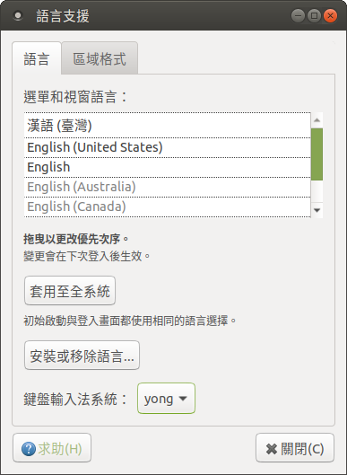

參、Linux版說明
本說明只限於本人所製作小小輸入法平台的Linux版本包裝的使用。
一、簡介
Linux版包裝係以小小輸入法平台的Linux版包裝檔做的定製版。
只提供7z壓縮格式的包裝檔，無deb或rpm格式。
二、系統需求
- linux gtk-2.12 及以上。
三、安裝
安裝工作需要一個可以使用sudo的使用者帳號。
先解壓縮到所要的安裝目錄。這目錄可以是/opt/。這裡為方便說明，以使用者家目錄 ~ 為例。
$ cd ~/yong
$ sudo ./yong-tool.sh --install
$ ./yong-tools.sh --select
登出再重新登入，讓新設定生效。
下圖為Ubuntu Mate 16.04的例子，“語言支援”的“鍵盤輸入法系統：”應該會是yong：

詳細說明請見〈Linux下小小輸入法的安裝〉或yong.chm中>>其它說明>>安裝裁減>>小小的安裝。如果有用ibus，務必先看一下再安裝。
最後，你可以把界面文字轉譯檔translate.txt複製到 ~/.yong/中：
$ cd ~/yong
$ cp translate.txt ~/.yong/
這項若沒做並不會影響程式的正常運作，僅僅界面上少數文字仍維持使用簡體中文用語。
四、卸載方法
$ sudo ./yong-tool.sh --uninstall
$ ./yong-tool.sh --select
五、更新
解壓蓋掉原有的安裝，重新執行yong-tool.sh --install。
六、使用上與Windows版的不同
-
設置檔因執行平台的差異而做了小調整：
-
[main]->pos=2
位置調到左下角。
-
[input]->#font=微軟正黑體 12
改成不設置，使用系統預設。
-
-
有幾個Windows平台才有的功能，在Linux上沒用：
- 所以界面選單上的命令也因此而有些不同。幫助檔也無法從界面選單開啟，但仍可以直接到yong目錄下找到幫助檔。
- 發送文件功能無法正常使用，甚至讓小小崩潰。
- 字、碼轉譯功能。
-
Linux版尚有其他已知的問題：
-
在某些軟體上會無法使用，或者不正常，像：
- wxMEdit：完全無法用。
- Sublime Text 3：有時會失效。組字窗有字時，按Backspace，不是刪組字窗的字，而是已輸出的字。
-
總之，因平台的差異或其他因素，運作上會與Windows版的有點不同。